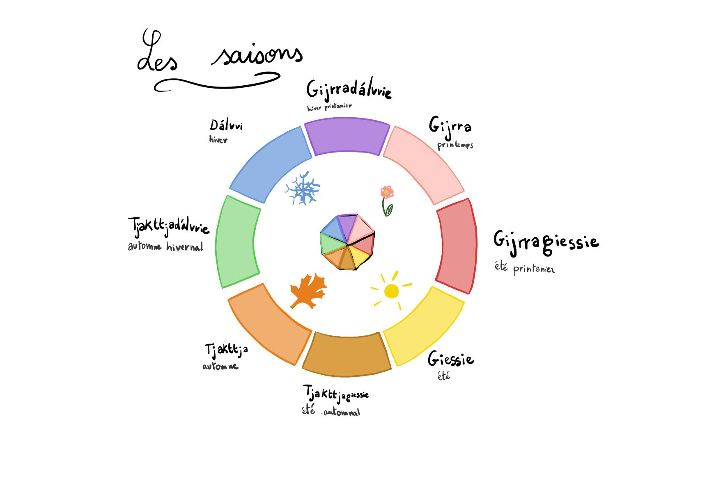

Les saisons
Le peuple Sámi compte huit saisons et non quatre. Les écarts de température peuvent aller jusqu’à 70 °C entre les saisons. Les samis se déplacent avec leurs rennes du littoral vers les montagnes pendant l’année et nomment leurs saisons en fonction des besoins et du comportement de leurs troupeaux de rennes.
L’hiver – Dálvvie
Lorsque la neige et la glace recouvrent la Laponie, les Samis y voient un tapis protecteur pour la terre. Pendant la «saison de l’Attention», la nature s'arrête et le rythme de tous ceux qui y vivent se ralentit. Même les rennes doivent déployer beaucoup d’efforts lorsqu’ils creusent pour trouver leur nourriture à cause d'épaisses couches de neige. Les premiers rayons de soleil marquent la fin de l’hiver et annoncent le renouveau tant espéré car le soleil ne se lève plus lors de cette saison . L’hiver est la plus longue des 8 saisons.
L’hiver printanier – Gijrradálvvie
De début mars à fin avril, lorsque les jours commencent enfin à s’allonger. La nature émerge timidement de sa phase de repos. Les samis surnomment l’hiver printanier la «saison du Réveil». Les rennes trouvent plus facilement la nourriture dont ils ont urgemment besoin. C’est surtout vrai pour les femelles, qui portent encore leurs faons et qui sentent qu’elles devront bientôt rejoindre l’endroit où elles leur donneront naissance.
Printemps – Gijrra
Lorsque les glaces fondent, l’annonce du printemps se fait ressentir, c’est le signe que la «saison du Retour» a commencé. Le sol retrouve sa couleur verdoyante et les rennes donnent naissance à leurs faons dans des clairières où ils se sentent en sécurité et où ils reviennent chaque année.
L’été printanier – Gijrragiessie
Pendant la «saison de la Croissance», la nature encore jeune pousse lentement. Les arbres, les feuilles encore petites dansent dans le vent chaud. Les Samis mènent alors leurs troupeaux de rennes vers les glaciers des «fjälls», où les faons peuvent grandir paisiblement, sécurisés par leur troupeau.
L’été – Giessie
En été, les jours sont longs en Laponie. Les rennes profitent de ces longues journées et de la végétation pour se constituer des réserves de graisse pour survivre à l’hiver rude. Les bois des rennes se développent et leur ventres se remplissent, ce qui ravit aussi les bergers.
L’été automnal – Tjakttjagiessie
L’été automnal est la saison de récolte des fruits estivaux. En plus de la chasse, il est important de remplir les garde-manger. La chaleur, le soleil et la pluie offrent des fruits, des baies, des herbes et des champignons. Stocker des récoltes permet aux samis de pouvoir continuer de les savourer tout au long de l’hiver car la nature va bientôt arborer ses couleurs d’automne.
L’Automne – Tjakttja
Pendant la «saison de l’Énergie», le gel revient dans le sápmi et des nappes de brouillard envahissent les tourbières et s’étendent jusque dans les forêts. Les pâturages deviennent jaunes et les sols s’appauvrissent . La période sombre, appelée “skábma”, approche, l’hiver arrive. Les rennes, eux, se reproduisent et leur fourrure s’épaissit.
L’automne hivernal – Tjakttjadálvvie
Lorsque le soleil disparaît et que les Samis sont laissés au calme de la nuit sans fin, les rennes migrent vers leurs pâturages d’hiver. Le sol se met au repos sous une couche de neige, tandis que des aurores boréales animent le ciel nocturne. Pendant cette saison, les étoiles scintillent et annoncent le prochain renouveau.